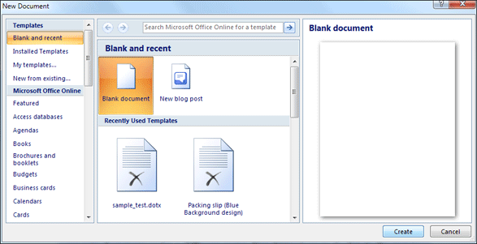
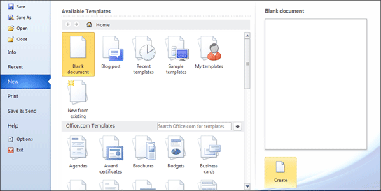

Free
computer Tutorials
|
Free
computer Tutorials
|
|
 home home |
|
|||||
Microsoft Word 2007 to 2010
The Crime Statistics DocumentIn this section, you'll discover how to make text bold, underline text, and change it to italics. You'll also learn something about bullets, tabs, indents, margins, and the Page Setup. So, when you're ready, launch Microsoft Word.
If you already have Word open, start a new blank document by clicking the round Office button in the top left of Word, for 2007 users. From the menu, click on New. When you see the dialogue box appear select Blank Document then the Create button at the bottom:  For 2010 users, click the File tab at the top of Word. From the menu on the left, click on New to see the following:  Select Blank Document from the list at the top. Then click the Create button in the bottom right. When you create a new document this page is always called Document followed by a number (Document 1, Document 2, etc). Click the round Office button in the top left and save your new document under a different name. (Or click the File tab, if you have Word 2010.) You learnt how to do this in the previous section. Call it Crime Statistics. When you have saved your new document under a different name, type in the following. Type it exactly as it is below. Don't try to format it just yet.
Constable Tucker's Crime Statistics January February March *Does not include Mr Irate's alleged theft from his sweet shop The crimes committed are:
As you can see, Constable Tucker's statistics are a bit messy and difficult to read. We'll tidy the report up during the course of this section. First, we'll make some of the text bold. Bold Text in Microsoft Word --> <--Back to the Word Contents Page View all our Home Study Computer Courses
|
||||||
|